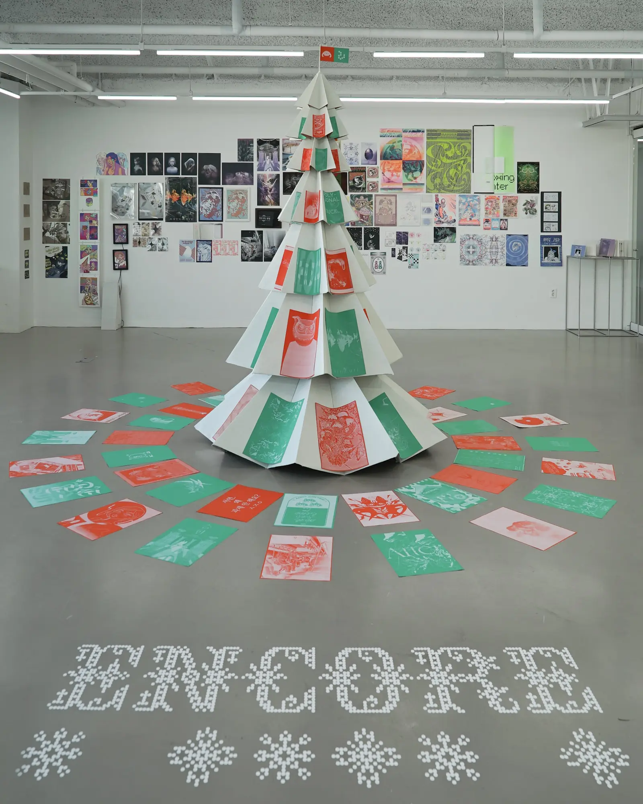
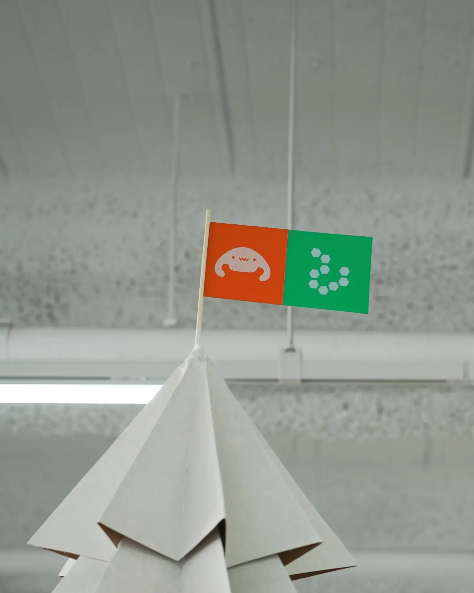
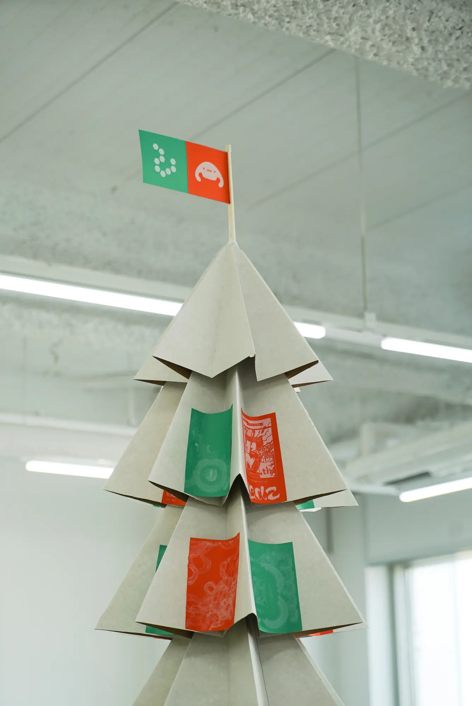
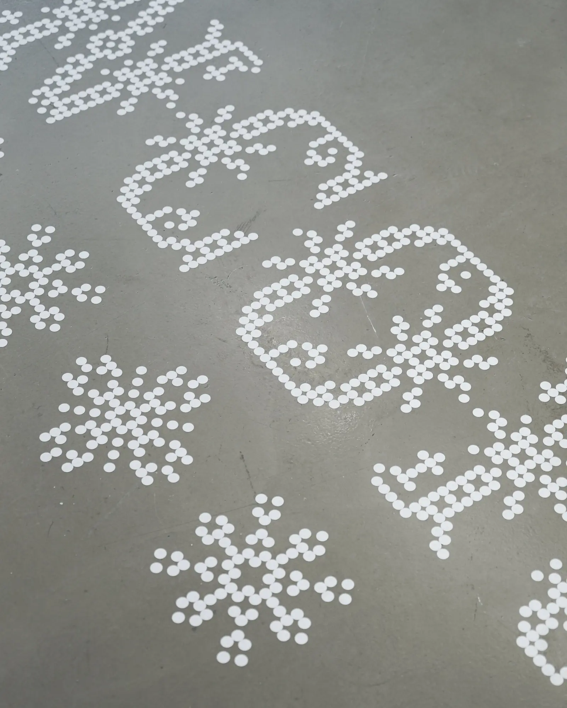
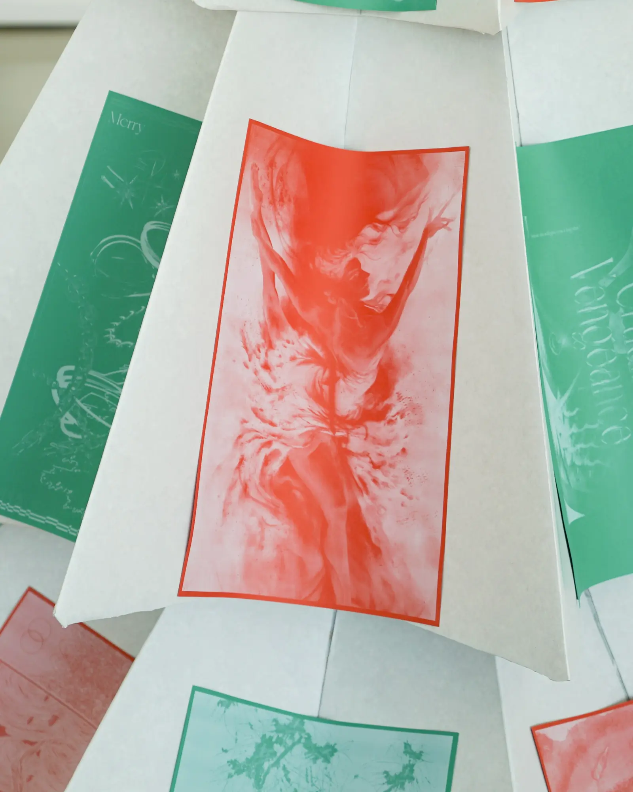
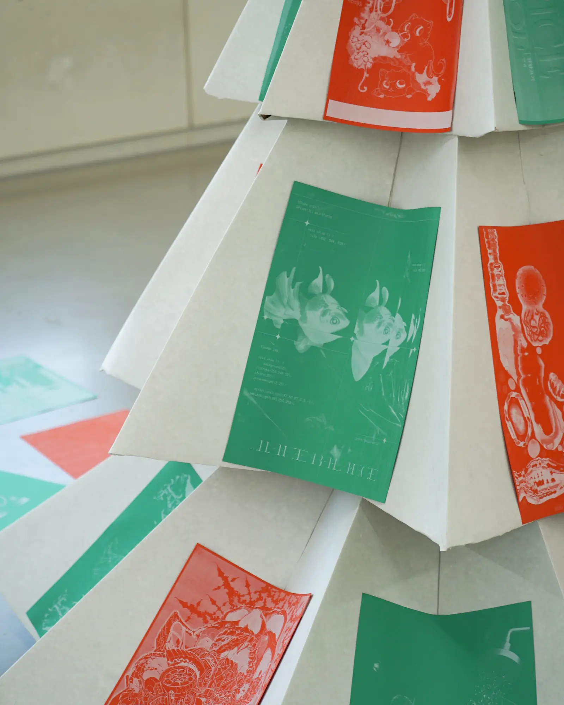
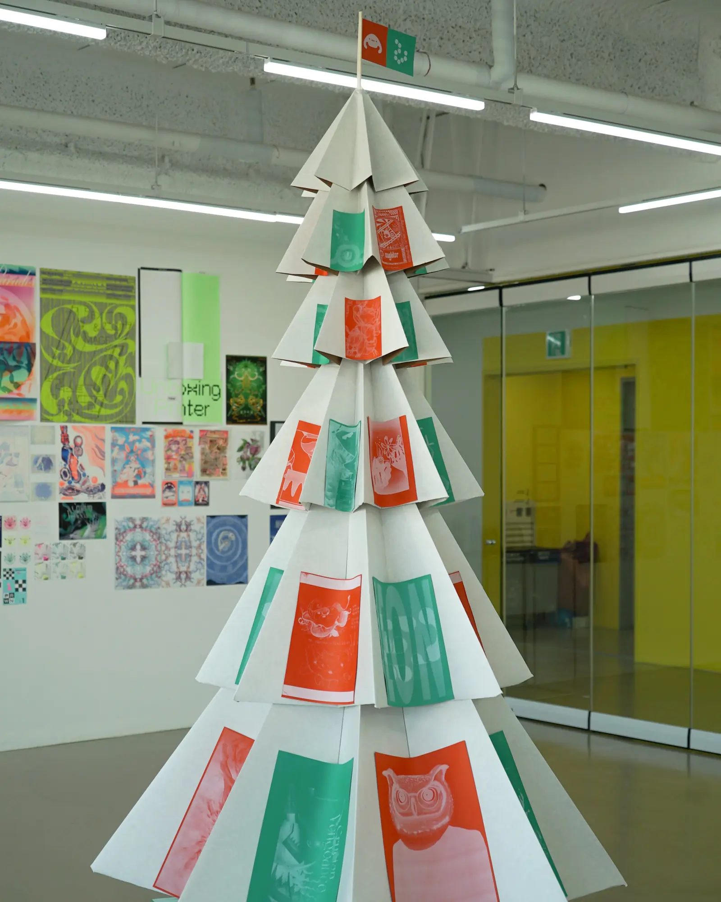
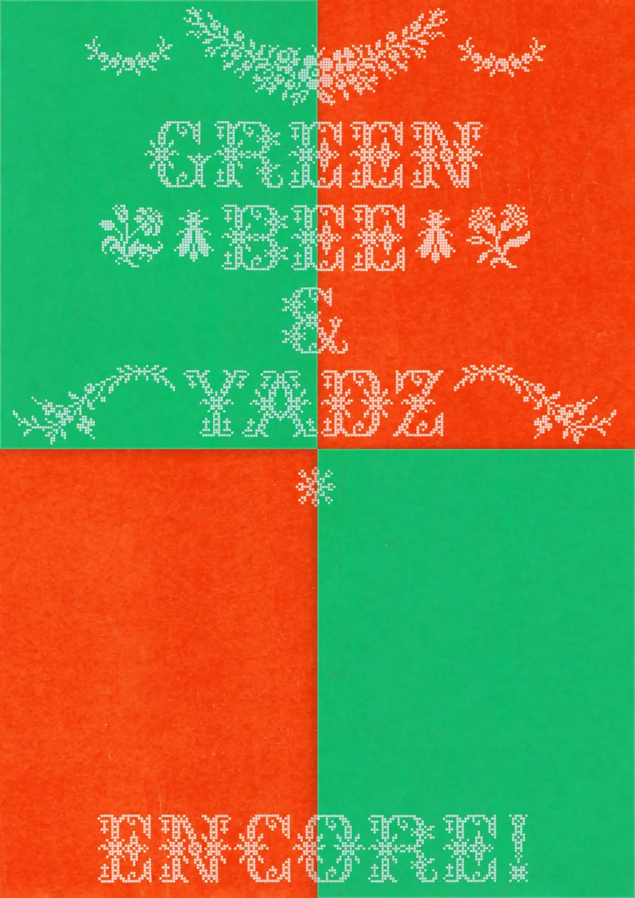

ENCORE!

〈ENCORE!〉전시를 나준흠 디자이너와 아트디렉팅 했습니다. 포스터 트리는 재생산, 재활용의 의미에 맞게 두성종이사의 친환경 재생지만을 사용해 제작했습니다.








〈ENCORE!〉전시를 나준흠 디자이너와 아트디렉팅 했습니다. 포스터 트리는 재생산, 재활용의 의미에 맞게 두성종이사의 친환경 재생지만을 사용해 제작했습니다.






